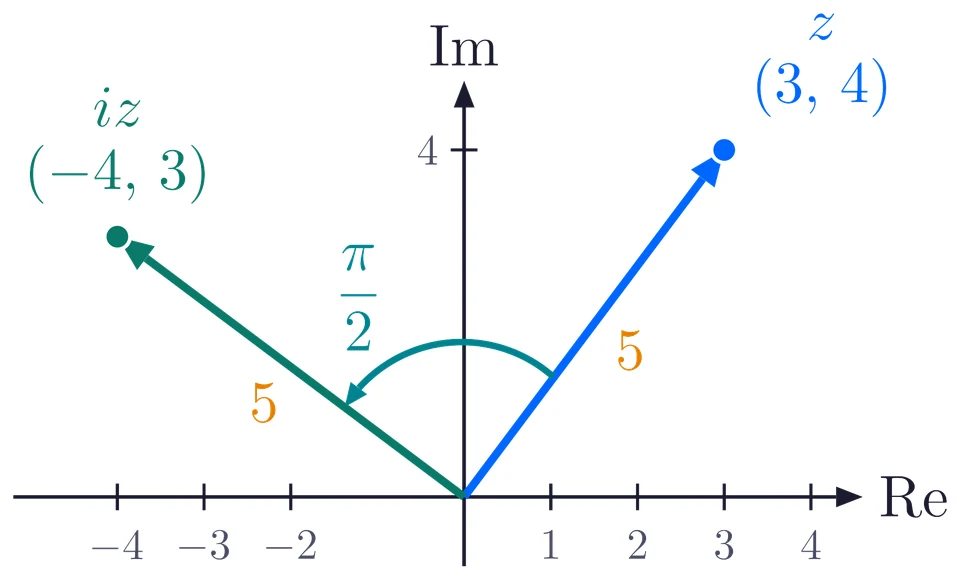
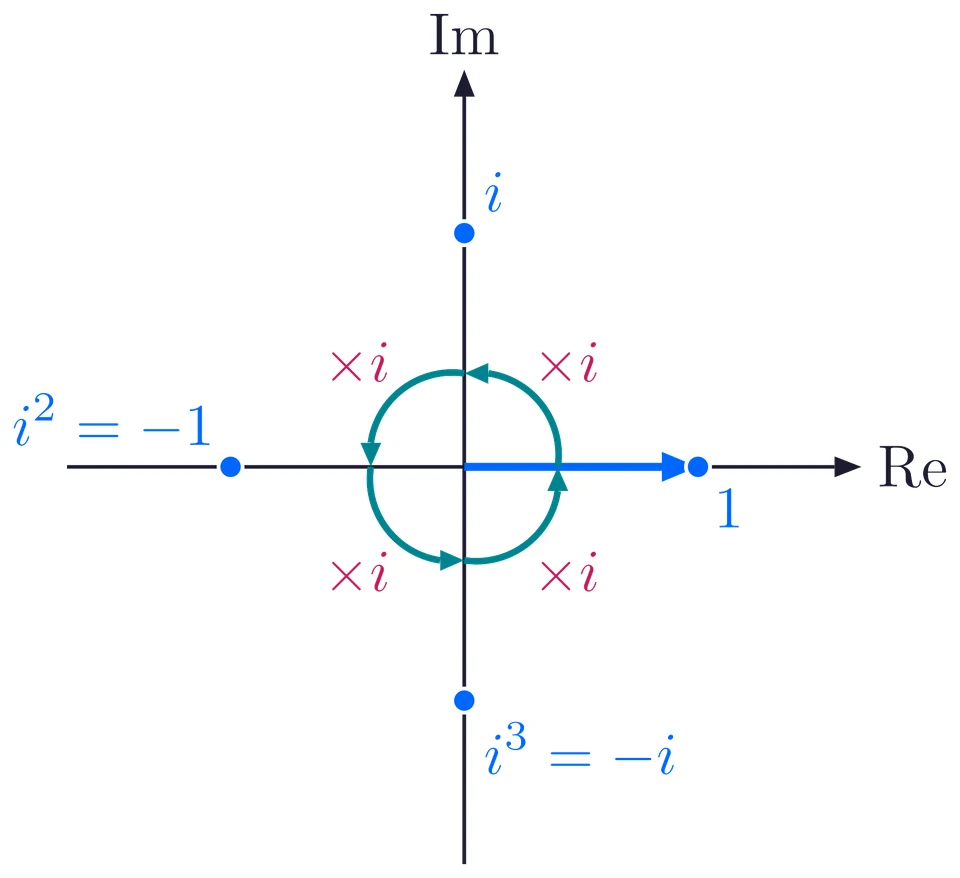
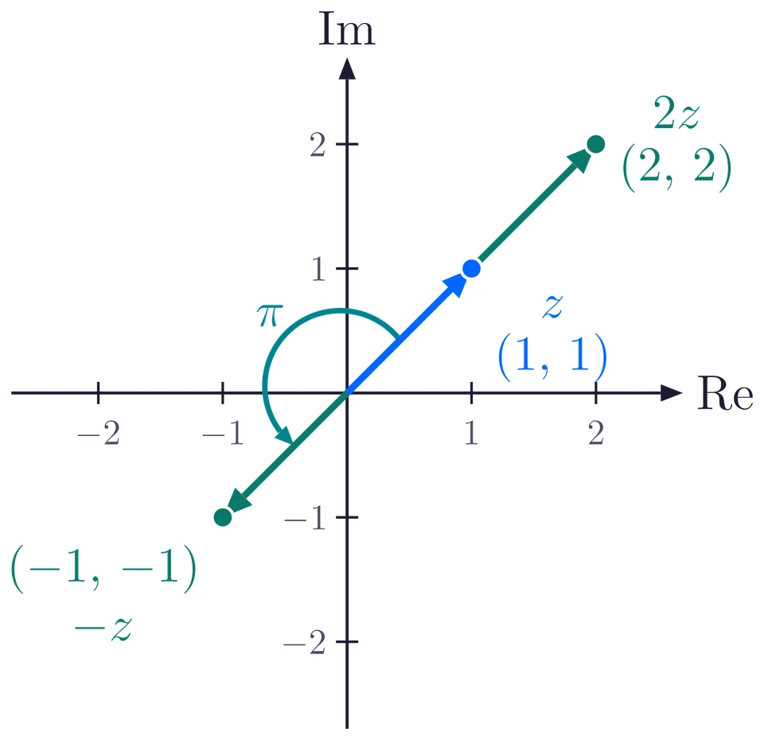
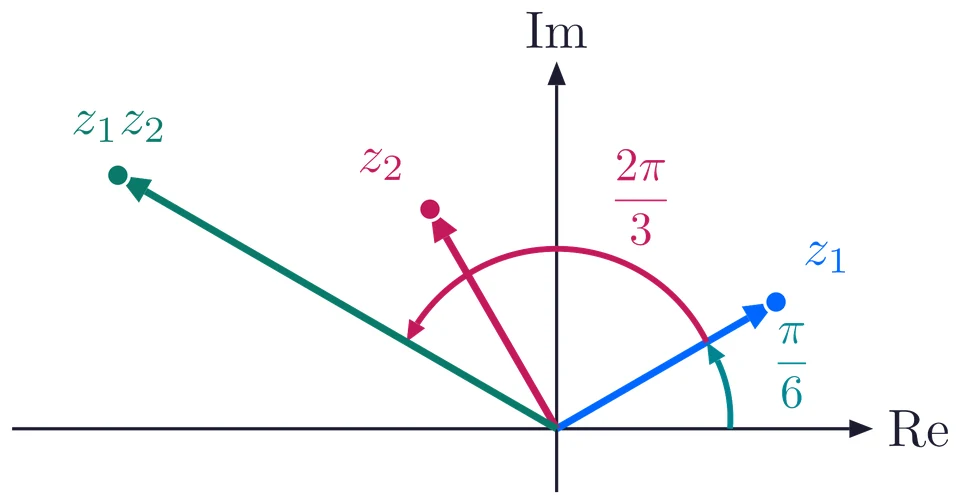
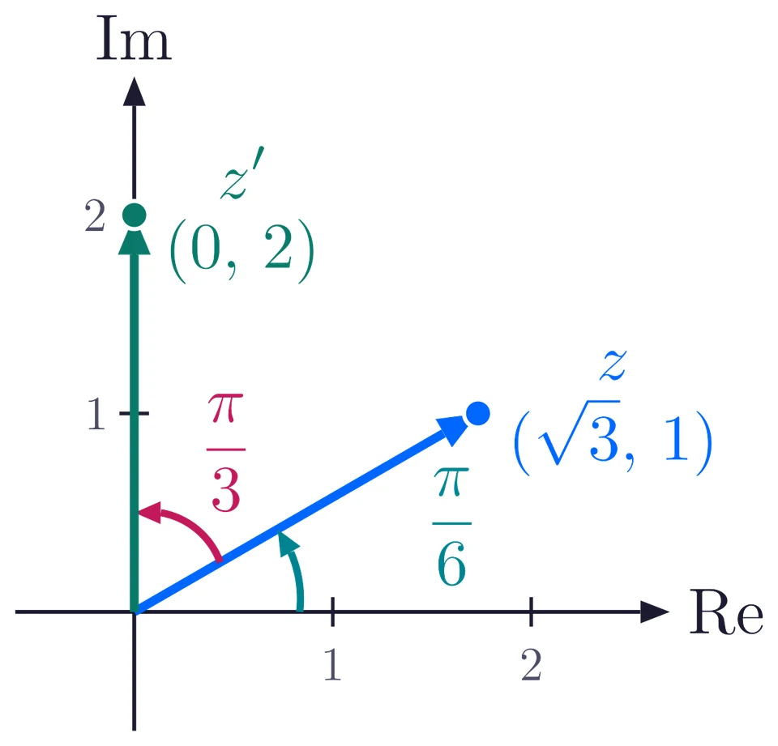
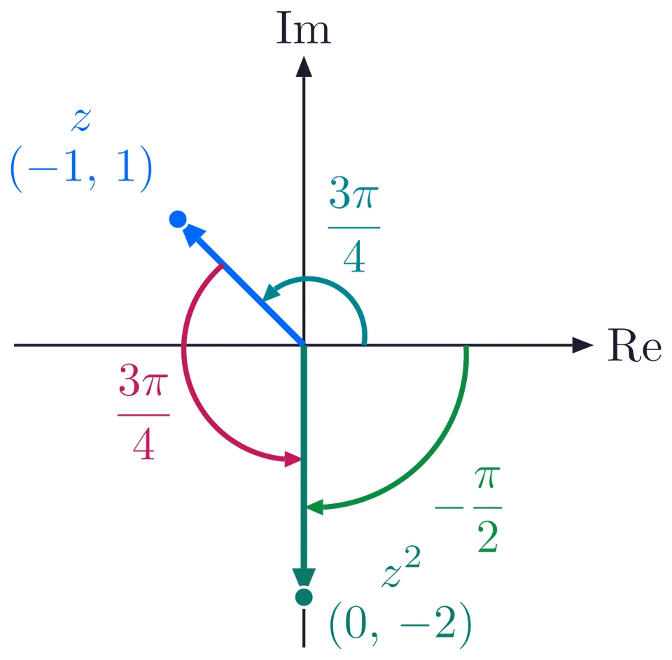
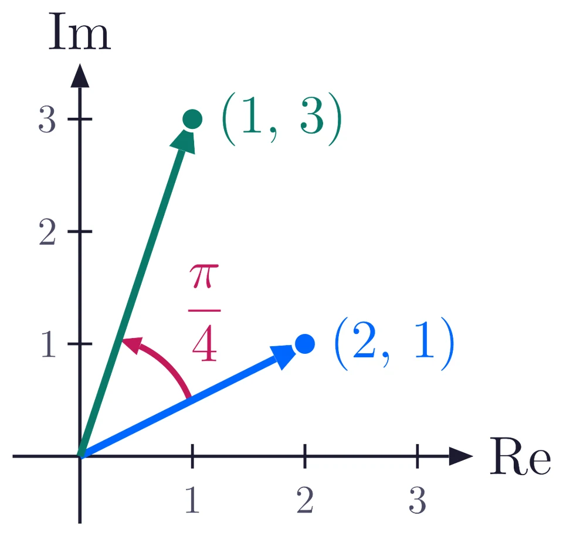

Two words: rotate and scale
As in the previous lesson, a complex number \(z = x + iy\) is drawn as an arrow from the origin to the point \((x, y)\) on the Argand plane.
To rotate an arrow is to turn it about the origin. Its length stays the same; only its direction changes. Anticlockwise is the positive direction, as for the argument.
To scale an arrow is to stretch it or shrink it along its own line. Its direction stays the same; only its length changes. Scaling by \(2\) doubles the length, and scaling by \(\dfrac{1}{2}\) halves it.
Multiply by \(i\): a quarter turn
\[ i(3 + 4i) = 3i + 4i^2 = 3i - 4 = -4 + 3i . \]
The point \((3, 4)\) moves to \((-4, 3)\). Both arrows have length \(5\), so nothing was stretched. The arrow has turned by \(\dfrac{\pi}{2}\) anticlockwise, from the first quadrant into the second.

This works for every complex number:
\[ i(x + iy) = ix + i^2 y = -y + ix , \]
so the point \((x, y)\) always moves to \((-y, x)\), a quarter turn anticlockwise about the origin. Multiplying by \(-i\) sends \((x, y)\) to \((y, -x)\), a quarter turn clockwise.
Powers of \(i\): why \(i^2 = -1\)
Start with the arrow to \(1\). Each multiplication by \(i\) is one more quarter turn:
\[ i^1 = i, \qquad i^2 = -1, \qquad i^3 = -i, \qquad i^4 = 1 . \]

Two quarter turns make a half turn, and a half turn takes \(1\) to \(-1\). That is why \(i^2 = -1\). Four quarter turns make a full turn, so the powers of \(i\) repeat in a cycle of four: for every whole number \(k\), \(i^{4k} = 1\), \(i^{4k+1} = i\), \(i^{4k+2} = -1\) and \(i^{4k+3} = -i\).
Multiply by a real number
A positive real number \(k\) has argument \(0\), so it does not turn the arrow. It only scales it: the arrow gets longer if \(k > 1\) and shorter if \(0 < k < 1\). For example, \(2(1 + i) = 2 + 2i\) is twice as long as \(1 + i\) and points the same way.
A negative real number \(k\) has argument \(\pi\): it turns the arrow by half a turn and scales it by \(|k|\). Multiplying by \(-1\) is a half turn alone, because \(-1 = i \times i\) is two quarter turns: \(-(1 + i) = -1 - i\), the point \((-1, -1)\).

The general rule: lengths multiply, angles add
Formulas to remember
For any two nonzero complex numbers \(z_1\) and \(z_2\),
\[ |z_1 z_2| = |z_1|\,|z_2|, \qquad \arg(z_1 z_2) = \arg z_1 + \arg z_2 \ \ (\text{up to a multiple of } 2\pi). \]
Take \(z_1 = \sqrt{3} + i\), the point \((\sqrt{3}, 1)\), with length \(2\) and angle \(\dfrac{\pi}{6}\), and \(z_2 = -1 + \sqrt{3}\,i\), the point \((-1, \sqrt{3})\), with length \(2\) and angle \(\dfrac{2\pi}{3}\). Turn the arrow of \(z_1\) by \(\dfrac{2\pi}{3}\) and stretch it by \(2\): the product has length \(2 \times 2 = 4\) and angle \(\dfrac{\pi}{6} + \dfrac{2\pi}{3} = \dfrac{5\pi}{6}\).

Check with algebra:
\[ (\sqrt{3} + i)(-1 + \sqrt{3}\,i) = -\sqrt{3} + 3i - i + \sqrt{3}\,i^2 = -2\sqrt{3} + 2i . \]
Its length is \(\sqrt{12 + 4} = 4\). It is in the second quadrant with \(\alpha = \tan^{-1}\dfrac{2}{2\sqrt{3}} = \dfrac{\pi}{6}\), so its argument is \(\pi - \dfrac{\pi}{6} = \dfrac{5\pi}{6}\). The same point.
Why it works
Write \(z_1 = r_1(\cos\theta_1 + i\sin\theta_1)\) and \(z_2 = r_2(\cos\theta_2 + i\sin\theta_2)\). Open the brackets and use \(i^2 = -1\):
\[ \begin{aligned} z_1 z_2 &= r_1 r_2\left[(\cos\theta_1\cos\theta_2 - \sin\theta_1\sin\theta_2) + i(\sin\theta_1\cos\theta_2 + \cos\theta_1\sin\theta_2)\right]\\ &= r_1 r_2\left[\cos(\theta_1 + \theta_2) + i\sin(\theta_1 + \theta_2)\right]. \end{aligned} \]
This is the polar form of a number with length \(r_1 r_2\) and angle \(\theta_1 + \theta_2\).
Euler form and the rotation rule
The arrow of length \(1\) at angle \(\theta\) ends at the point \((\cos\theta, \sin\theta)\). That number is written
\[ e^{i\theta} = \cos\theta + i\sin\theta \qquad \text{(Euler's formula).} \]
So every nonzero complex number is \(z = r e^{i\theta}\) with \(r = |z|\) and \(\theta = \arg z\), and \(z_1 z_2 = r_1 r_2\,e^{i(\theta_1 + \theta_2)}\): the powers of \(e\) add, so the angles add.
Rotation rule
To turn \(z\) about the origin through an angle \(\theta\):
\[ \text{anticlockwise: } z' = z\,e^{i\theta}, \qquad \text{clockwise: } z' = z\,e^{-i\theta}. \]
\(e^{i\theta}\) has length \(1\), so it turns without scaling. To turn by \(\theta\) and also multiply the distance from the origin by \(k > 0\), multiply by \(k\,e^{i\theta}\).
Turn \(z = \sqrt{3} + i\) (length \(2\), angle \(\dfrac{\pi}{6}\)) anticlockwise by \(\dfrac{\pi}{3}\). The new angle is \(\dfrac{\pi}{6} + \dfrac{\pi}{3} = \dfrac{\pi}{2}\), so the arrow lands on the positive imaginary axis at \((0, 2)\). With the rule:
\[ (\sqrt{3} + i)\left(\frac{1}{2} + \frac{\sqrt{3}}{2}\,i\right) = \frac{\sqrt{3}}{2} + \frac{3}{2}\,i + \frac{1}{2}\,i + \frac{\sqrt{3}}{2}\,i^2 = 2i . \]

Careful: adding angles can leave the principal range
Take \(z = -1 + i\), with \(\arg z = \dfrac{3\pi}{4}\). Then \(z^2 = (-1 + i)^2 = 1 - 2i + i^2 = -2i\).
Adding the angles gives \(\dfrac{3\pi}{4} + \dfrac{3\pi}{4} = \dfrac{3\pi}{2}\), and the arrow really does turn that far. But \(\dfrac{3\pi}{2} > \pi\), so it is not the principal argument: \(\arg(z^2) = \dfrac{3\pi}{2} - 2\pi = -\dfrac{\pi}{2}\).
After adding the angles, always check the range. If the sum is outside \((-\pi, \pi]\), add or subtract \(2\pi\); one correction is always enough.

Solved example
The point \(2 + i\) is turned anticlockwise about the origin through \(\dfrac{\pi}{4}\), and its distance from the origin is multiplied by \(\sqrt{2}\). Find the new point.
The multiplier. One number \(w\) must turn by \(\dfrac{\pi}{4}\) and stretch by \(\sqrt{2}\), so \(|w| = \sqrt{2}\) and \(\arg w = \dfrac{\pi}{4}\):
\[ w = \sqrt{2}\left(\cos\frac{\pi}{4} + i\sin\frac{\pi}{4}\right) = \sqrt{2}\left(\frac{1}{\sqrt{2}} + \frac{1}{\sqrt{2}}\,i\right) = 1 + i . \]
Multiply. \((2 + i)(1 + i) = 2 + 2i + i + i^2 = 1 + 3i\).
Check. \(|1 + 3i| = \sqrt{10} = \sqrt{2}\times\sqrt{5} = \sqrt{2}\,|2 + i|\).
The new point is \(1 + 3i\), that is \((1, 3)\).

Practice set
Easy to hard. Give every argument as the principal argument, in radians. Try each one before you open its answer.
Find \(i(2 - 5i)\). How has the point moved?
Show answer
\(5 + 2i\). \(i(2 - 5i) = 2i - 5i^2 = 5 + 2i\). The point \((2, -5)\) moves to \((5, 2)\): a quarter turn anticlockwise.
Find \(-i(3 + 4i)\).
Show answer
\(4 - 3i\). \(-i(3 + 4i) = -3i - 4i^2 = 4 - 3i\): a quarter turn clockwise.
\(|z_1| = 3\), \(\arg z_1 = \dfrac{\pi}{6}\), \(|z_2| = 2\), \(\arg z_2 = \dfrac{\pi}{3}\). Find \(z_1 z_2\).
Show answer
\(6i\). Length \(3 \times 2 = 6\), angle \(\dfrac{\pi}{6} + \dfrac{\pi}{3} = \dfrac{\pi}{2}\), so \(z_1 z_2 = 6\left(\cos\dfrac{\pi}{2} + i\sin\dfrac{\pi}{2}\right) = 6i\).
Find the modulus and the argument of \((1 + i)(1 + \sqrt{3}\,i)\).
Show answer
Modulus \(2\sqrt{2}\), argument \(\dfrac{7\pi}{12}\). Lengths \(\sqrt{2}\) and \(2\) multiply to \(2\sqrt{2}\). Angles \(\dfrac{\pi}{4} + \dfrac{\pi}{3} = \dfrac{7\pi}{12}\), already in \((-\pi, \pi]\). Check: the product is \((1 - \sqrt{3}) + (1 + \sqrt{3})\,i\), in the second quadrant.
Turn \(1 + \sqrt{3}\,i\) clockwise through \(\dfrac{\pi}{2}\) about the origin.
Show answer
\(\sqrt{3} - i\). Multiply by \(e^{-i\pi/2} = -i\): \(-i(1 + \sqrt{3}\,i) = -i - \sqrt{3}\,i^2 = \sqrt{3} - i\).
Turn \(2 + 2i\) anticlockwise through \(\dfrac{\pi}{4}\) about the origin.
Show answer
\(2\sqrt{2}\,i\). \(|2 + 2i| = 2\sqrt{2}\) and its angle is \(\dfrac{\pi}{4}\). Turning by \(\dfrac{\pi}{4}\) gives angle \(\dfrac{\pi}{2}\) with the same length: the point \((0, 2\sqrt{2})\).
Let \(z = -\sqrt{3} + i\). Find \(\arg(z^2)\). Is it equal to \(2\arg z\)?
Show answer
\(\arg(z^2) = -\dfrac{\pi}{3}\), and no. \(\arg z = \dfrac{5\pi}{6}\), so \(2\arg z = \dfrac{5\pi}{3}\), which lies outside \((-\pi, \pi]\). \(z^2 = 3 - 2\sqrt{3}\,i + i^2 = 2 - 2\sqrt{3}\,i\), in the fourth quadrant, with argument \(\dfrac{5\pi}{3} - 2\pi = -\dfrac{\pi}{3}\).
\(2 + i\) is one vertex of a square whose centre is the origin. Find the other three vertices.
Show answer
\(-1 + 2i\), \(-2 - i\), \(1 - 2i\). The vertices of a square centred at the origin are quarter turns of one another, so multiply \(2 + i\) by \(i\), \(i^2\) and \(i^3\).